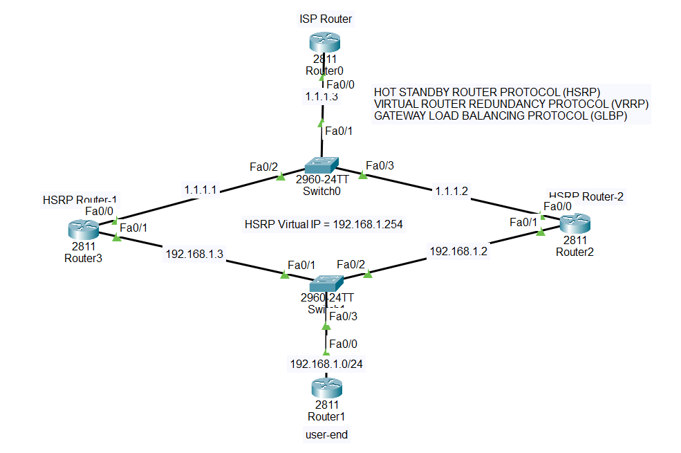

HSRP:
Router1 (Active)
/
PC ---- Virtual IP
\
Router2 (Standby)

Isp Router Interface up:
Router(config)#int f0/0
Router(config-if)#ip add 1.1.1.3 255.0.0.0
Router(config-if)#no sh
Router(config-if)#
%LINK-5-CHANGED: Interface FastEthernet0/0, changed state to up
%LINEPROTO-5-UPDOWN: Line protocol on Interface FastEthernet0/0, changed state to up
Router(config-if)#exit
HSRP Router1 Interface up:
Router(config)#int f0/0
Router(config-if)#ip add 1.1.1.1 255.0.0.0
Router(config-if)#no sh
Router(config-if)#
%LINK-5-CHANGED: Interface FastEthernet0/0, changed state to up
%LINEPROTO-5-UPDOWN: Line protocol on Interface FastEthernet0/0, changed state to up
Router(config-if)#exit
Router(config)#int f0/1
Router(config-if)#ip add 192.168.1.3 255.255.255.0
Router(config-if)#no sh
Router(config-if)#
%LINK-5-CHANGED: Interface FastEthernet0/1, changed state to up
%LINEPROTO-5-UPDOWN: Line protocol on Interface FastEthernet0/1, changed state to up
Router(config-if)#exit
HSRP Router2 Interface up:
Router(config)#int f0/0
Router(config-if)#ip add 1.1.1.2 255.0.0.0
Router(config-if)#no sh
Router(config-if)#
%LINK-5-CHANGED: Interface FastEthernet0/0, changed state to up
%LINEPROTO-5-UPDOWN: Line protocol on Interface FastEthernet0/0, changed state to up
Router(config-if)#exit
Router(config)#int f 0/1
Router(config-if)#ip add 192.168.1.2 255.255.255.0
Router(config-if)#no sh
Router(config-if)#
%LINK-5-CHANGED: Interface FastEthernet0/1, changed state to up
%LINEPROTO-5-UPDOWN: Line protocol on Interface FastEthernet0/1, changed state to up
Router(config-if)#exit
User-end Router Interface up:
Router(config)#int f0/0
Router(config-if)#ip add 192.168.1.1 255.255.255.0
Router(config-if)#no sh
Router(config-if)#
%LINK-5-CHANGED: Interface FastEthernet0/0, changed state to up
%LINEPROTO-5-UPDOWN: Line protocol on Interface FastEthernet0/0, changed state to up
Router(config-if)#exit
HSRP Router1 standby grouping by virtual ip:
Router(config)#int f0/1
Router(config-if)#standby 1 ip 192.168.1.254
HSRP Router2:
Router(config)#int f0/1
Router(config-if)#standby 1 ip 192.168.1.254
Routing is not mentioned implement which is preferable,I did RIP.
Verification:
Router#show standby brief
P indicates configured to preempt.
|
Interface Grp Pri P State Active Standby Virtual IP
Fa0/1 1 100 Active local 192.168.1.2 192.168.1.254